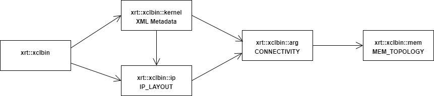

XRT Native Library C++ API¶
Buffer APIs¶
-
class xrt::bo¶
xrt::bo represents a buffer object that can be used as kernel argument
Public Types
-
enum class flags : uint32_t¶
buffer object flags
Values:
-
enumerator normal¶
Create normal BO with host side and device side buffers
-
enumerator cacheable¶
Create cacheable BO. Only effective on embedded platforms.
-
enumerator device_only¶
Create a BO with a device side buffer only
-
enumerator host_only¶
Create a BO with a host side buffer only
-
enumerator p2p¶
Create a BO for peer-to-peer use
-
enumerator svm¶
Create a BO for SVM (supported on specific platforms only)
Public Functions
-
inline bo()¶
bo() - Constructor for empty bo
A default constructed bo can be assigned to and can be used in a Boolean check along with comparison.
Unless otherwise noted, it is undefined behavior to use xrt::bo APIs on a default constructed object.
-
bo(const xrt::device &device, void *userptr, size_t sz, bo::flags flags, memory_group grp)¶
bo() - Constructor with user host buffer and flags
The device memory group depends on connectivity. If the buffer as a kernel argument, then the memory group can be obtained from the xrt::kernel object.
- Parameters
device – The device on which to allocate this buffer
userptr – Pointer to aligned user memory
sz – Size of buffer
flags – Specify type of buffer
grp – Device memory group to allocate buffer in
-
bo(const xrt::device &device, void *userptr, size_t sz, memory_group grp)¶
bo() - Constructor with user host buffer and default flags
The device memory group depends on connectivity. If the buffer as a kernel argument, then the memory group can be obtained from the xrt::kernel object.
- Parameters
device – The device on which to allocate this buffer
userptr – Pointer to aligned user memory
sz – Size of buffer
grp – Device memory group to allocate buffer in
-
bo(const xrt::device &device, size_t sz, bo::flags flags, memory_group grp)¶
bo() - Constructor where XRT manages host buffer if needed
The device memory group depends on connectivity. If the buffer as a kernel argument, then the memory group can be obtained from the xrt::kernel object.
- Parameters
device – The device on which to allocate this buffer
sz – Size of buffer
flags – Specify type of buffer
grp – Device memory group to allocate buffer in
-
bo(const xrt::device &device, size_t sz, memory_group grp)¶
bo() - Constructor, default flags, where XRT manages host buffer if any
The device memory group depends on connectivity. If the buffer as a kernel argument, then the memory group can be obtained from the xrt::kernel object.
- Parameters
device – The device on which to allocate this buffer
sz – Size of buffer
grp – Device memory group to allocate buffer in
-
bo(const xrt::device &device, export_handle ehdl)¶
bo() - Constructor to import an exported buffer
If the exported buffer handle acquired by using the export() method is from another process, then it must be transferred through proper IPC mechanism translating the underlying file-descriptor asscociated with the buffer, see also constructor taking process id as argument.
- Parameters
device – Device that imports the exported buffer
ehdl – Exported buffer handle, implementation specific type
-
bo(const xrt::device &device, pid_type pid, export_handle ehdl)¶
bo() - Constructor to import an exported buffer from another process
The exported buffer handle is obtained from exporting process by calling
export(). This contructor requires that XRT is built on and running on a system with pidfd support. Also the importing process must have permission to duplicate the exporting process’ file descriptor. This permission is controlled by ptrace access mode PTRACE_MODE_ATTACH_REALCREDS check (see ptrace(2)).- Parameters
device – Device that imports the exported buffer
pid – Process id of exporting process
ehdl – Exported buffer handle, implementation specific type
-
bo(const xrt::hw_context &hwctx, void *userptr, size_t sz, bo::flags flags, memory_group grp)¶
bo() - Constructor with user host buffer and flags
The device memory group depends on connectivity. If the buffer as a kernel argument, then the memory group can be obtained from the xrt::kernel object.
- Parameters
hwctx – The hardware context in which to allocate this buffer
userptr – Pointer to aligned user memory
sz – Size of buffer
flags – Specify type of buffer
grp – Device memory group to allocate buffer in
-
bo(const xrt::hw_context &hwctx, void *userptr, size_t sz, memory_group grp)¶
bo() - Constructor with user host buffer and default flags
The device memory group depends on connectivity. If the buffer as a kernel argument, then the memory group can be obtained from the xrt::kernel object.
- Parameters
hwctx – The hardware context in which to allocate this buffer
userptr – Pointer to aligned user memory
sz – Size of buffer
grp – Device memory group to allocate buffer in
-
bo(const xrt::hw_context &hwctx, size_t sz, bo::flags flags, memory_group grp)¶
bo() - Constructor where XRT manages host buffer if needed
The device memory group depends on connectivity. If the buffer as a kernel argument, then the memory group can be obtained from the xrt::kernel object.
- Parameters
hwctx – The hardware context in which to allocate this buffer
sz – Size of buffer
flags – Specify type of buffer
grp – Device memory group to allocate buffer in
-
bo(const xrt::hw_context &hwctx, size_t sz, memory_group grp)¶
bo() - Constructor, default flags, where XRT manages host buffer if any
The device memory group depends on connectivity. If the buffer as a kernel argument, then the memory group can be obtained from the xrt::kernel object.
- Parameters
hwctx – The hardware context in which to allocate this buffer
sz – Size of buffer
grp – Device memory group to allocate buffer in
-
bo(const bo &parent, size_t size, size_t offset)¶
bo() - Constructor for sub-buffer
- Parameters
parent – Parent buffer
size – Size of sub-buffer
offset – Offset into parent buffer
-
bo &operator=(const bo &rhs) = default¶
operator= () - Copy assignment
Performs shallow copy, sharing data with the source
-
inline explicit operator bool() const¶
operator bool() - Check if bo handle is valid
-
size_t size() const¶
size() - Get the size of this buffer
Returns 0 for a default constructed xrt::bo.
- Returns
Size of buffer in bytes
-
uint64_t address() const¶
address() - Get the device address of this buffer
- Returns
Device address of buffer
-
memory_group get_memory_group() const¶
get_memory_group() - Get the memory group in which this buffer is allocated
- Returns
Memory group index with which the buffer was constructed
-
flags get_flags() const¶
get_flags() - Get the flags with which this buffer was constructed
- Returns
The xrt::bo::flags used when the buffer was contructed
-
export_handle export_buffer()¶
buffer_export() - Export this buffer
An exported buffer can be imported on another device by this process or another process. For multiprocess transfer, the exported buffer must be transferred through a proper IPC facility to translate the underlying file-descriptor properly into another process.
The lifetime of the exported buffer handle is associated with the exporting buffer (this). The handle is disposed of when the exporting buffer is destructed.
It is undefined behavior to use the export handle after the exporting buffer object has gone out of scope.
- Returns
Exported buffer handle
-
async_handle async(xclBOSyncDirection dir, size_t sz, size_t offset)¶
async() - Start buffer content txfer with device side
Asynchronously transfer specified size bytes of buffer starting at specified offset.
- Parameters
dir – To device or from device
sz – Size of data to synchronize
offset – Offset within the BO
-
inline async_handle async(xclBOSyncDirection dir)¶
async() - Start buffer content txfer with device side
Asynchronously transfer entire buffer content in specified direction
- Parameters
dir – To device or from device
-
void sync(xclBOSyncDirection dir, size_t sz, size_t offset)¶
sync() - Synchronize buffer content with device side
Sync specified size bytes of buffer starting at specified offset.
- Parameters
dir – To device or from device
sz – Size of data to synchronize
offset – Offset within the BO
-
inline void sync(xclBOSyncDirection dir)¶
sync() - Synchronize buffer content with device side
Sync entire buffer content in specified direction.
- Parameters
dir – To device or from device
-
void *map()¶
map() - Map the host side buffer into application
Map the contents of the buffer object into host memory
- Returns
Memory mapped buffer
-
template<typename MapType>
inline MapType map()¶ map() - Map the host side buffer info application
- Template Parameters
MapType – Type of mapped data
- Returns
Memory mapped buffer
-
template<typename MapType>
inline MapType map() const¶ map() - Const variant of map
Constness is enforce through return type
-
void write(const void *src, size_t size, size_t seek)¶
write() - Copy-in user data to host backing storage of BO
Copy source data to host buffer of this buffer object.
seekspecifies how many bytes to skip at the beginning of the BO before copying-insizebytes to host buffer.If BO has no host backing storage, e.g. a device only buffer, then write is directly to the device buffer.
- Parameters
src – Source data pointer
size – Size of data to copy
seek – Offset within the BO
-
inline void write(const void *src)¶
write() - Copy-in user data to host backing storage of BO
Copy specified source data to host buffer of this buffer object.
If BO has no host backing storage, e.g. a device only buffer, then write is directly to the device buffer.
- Parameters
src – Source data pointer
-
void read(void *dst, size_t size, size_t skip)¶
read() - Copy-out user data from host backing storage of BO
Copy content of host buffer of this buffer object to specified destination.
skipspecifies how many bytes to skip from the beginning of the BO before copying-outsizebytes of host buffer.If BO has no host backing storage, e.g. a device only buffer, then read is directly from the device buffer.
- Parameters
dst – Destination data pointer
size – Size of data to copy
skip – Offset within the BO
-
inline void read(void *dst)¶
read() - Copy-out user data from host backing storage of BO
Copy content of host buffer of this buffer object to specified destination.
If BO has no host backing storage, e.g. a device only buffer, then read is directly from the device buffer.
- Parameters
dst – Destination data pointer
-
void copy(const bo &src, size_t sz, size_t src_offset = 0, size_t dst_offset = 0)¶
copy() - Deep copy BO content from another buffer
Throws if copy size is 0 or sz + src/dst_offset is out of bounds.
- Parameters
src – Source BO to copy from
sz – Size of data to copy
src_offset – Offset into src buffer copy from
dst_offset – Offset into this buffer to copy to
-
class async_handle : public detail::pimpl<async_handle_impl>¶
xrt::bo::async_handle represents an asynchronously operation
A handle object is returned from asynchronous buffer object operations. It can be used to wait for the operation to complete.
-
enum class flags : uint32_t¶
Device APIs¶
-
class xrt::device¶
xrt::device represents used for acceleration.
Public Functions
-
device() = default¶
device() - Constructor for empty device
It is undefined behavior to use a default constructed device for anything but assignment, unless otherwise noted.
-
explicit device(unsigned int didx)¶
device() - Constructor from device index
Throws if no device is found matching the specified index.
- Parameters
didx – Device index
-
explicit device(const std::string &bdf)¶
device() - Constructor from string
If the string is in BDF format it matched against devices installed on the system. Otherwise the string is assumed to be a device index.
Throws if string format is invalid or no matching device is found.
- Parameters
bdf – String identifying the device to open.
-
explicit device(xclDeviceHandle dhdl)¶
device() - Constructor from a shim xclDeviceHandle
Create a managed device object from a shim xclDeviceHandle
- Parameters
dhdl – Shim xclDeviceHandle
-
device(const device &rhs) = default¶
device() - Copy ctor
Performs shallow copy, sharing data with the source
-
device &operator=(const device &rhs) = default¶
operator= () - Copy assignment
Performs shallow copy, sharing data with the source
-
template<info::device param>
inline info::param_traits<info::device, param>::return_type get_info() const¶ get_info() - Retrieve device parameter information
This function is templated on the enumeration value as defined in the enumeration xrt::info::device.
The return type of the parameter is based on the instantiated param_traits for the given param enumeration supplied as template argument, see namespace xrt::info
This function guarantees return values conforming to the format used by the time the application was built and for a two year period minimum. In other words, XRT can be updated to new versions without affecting the format of the return type.
-
uuid load_xclbin(const axlf *xclbin)¶
load_xclbin() - Load an xclbin
- Parameters
xclbin – Pointer to xclbin in memory image
- Returns
UUID of argument xclbin
-
uuid load_xclbin(const std::string &xclbin_fnm)¶
load_xclbin() - Read and load an xclbin file
This function reads the file from disk and loads the xclbin. Using this function allows one time allocation of data that needs to be kept in memory.
- Parameters
xclbin_fnm – Full path to xclbin file
- Returns
UUID of argument xclbin
-
uuid load_xclbin(const xrt::xclbin &xclbin)¶
load_xclbin() - load an xclin from an xclbin object
This function uses the specified xrt::xclbin object created by caller. The xrt::xclbin object must contain the complete axlf structure.
- Parameters
xclbin – xrt::xclbin object
- Returns
UUID of argument xclbin
-
uuid get_xclbin_uuid() const¶
get_xclbin_uuid() - Get UUID of xclbin image loaded on device
Note that current UUID can be different from the UUID of the xclbin loaded by this process using load_xclbin()
- Returns
UUID of currently loaded xclbin
-
template<typename SectionType>
inline SectionType get_xclbin_section(axlf_section_kind section, const uuid &uuid) const¶ get_xclbin_section() - Retrieve specified xclbin section
Get the xclbin section of the xclbin currently loaded on the device. The function throws on error
Note, this API may be replaced with more generic query request access
- Parameters
section – The section to retrieve
uuid – Xclbin uuid of the xclbin with the section to retrieve
- Returns
The specified section if available.
-
class error : public detail::pimpl<error_impl>, public xrt::exception¶
Exception base class for device errors.
Device specific exceptions are defined as subclasses.
Subclassed by xrt::device::runtime_error
-
class oom_error : public xrt::device::runtime_error¶
The device reported an out of memory error.
-
class runtime_error : public xrt::device::error¶
The device has encountered a runtime error.
Subclassed by xrt::device::oom_error
-
device() = default¶
Ctrlcode APIs¶
-
class xrt::elf : public detail::pimpl<elf_impl>¶
An elf contains instructions for functions to execute in some pre-configured hardware. The xrt::elf class provides APIs to mine the elf itself for relevant data.
Public Types
-
enum class platform : uint8_t¶
ELF OS/ABI values identifying the target AIE platform.
These values correspond to the ELF header e_ident[EI_OSABI] field and identify which AIE architecture the ELF was compiled for.
Values:
-
enumerator aie2ps¶
-
enumerator aie2p¶
-
enumerator aie2ps_group¶
-
enumerator aie4¶
-
enumerator aie4a¶
-
enumerator aie4z¶
-
enumerator aie2ps¶
Public Functions
-
explicit elf(const std::string &fnm)¶
elf() - Constructor from ELF file
-
explicit elf(const std::string_view &data)¶
elf() - Constructor from raw data
The raw data of the elfcan be deleted after calling the constructor.
- Parameters
data – Raw data of elf
-
inline explicit elf(const char *fnm)¶
elf() - Constructor from ELF file
Avoid ambiguity between std::string and std::string_view.
-
explicit elf(std::istream &stream)¶
elf() - Constructor from raw ELF data stream
- Parameters
stream – Raw data stream of elf
-
elf(const void *data, size_t size)¶
elf() - Constructor from raw ELF data
- Parameters
data – Pointer to raw elf data
size – Size of raw elf data
-
xrt::uuid get_cfg_uuid() const¶
get_cfg_uuid() - Get the configuration UUID of the elf
- Returns
The configuration UUID of the elf
-
bool is_full_elf() const¶
is_full_elf() - Check if the elf is a full ELF
A full ELF can be used as a replacement for xclbin, it contains all the information required to create a hardware context like partition size, kernel signatures, etc.
- Returns
True if the elf is a full ELF, false otherwise
-
platform get_platform() const¶
get_platform() - Get the target AIE platform
Returns the platform enum value corresponding to the ELF’s e_ident[EI_OSABI] field.
- Returns
The platform enum value for the ELF throws std::runtime_error if the ELF contains an unknown or unsupported platform value
-
uint32_t get_partition_size() const¶
get_partition_size() - Get the partition size (number of columns)
The partition size is stored in the .note.xrt.configuration section of the ELF file.
- Returns
The partition size (number of columns) for the ELF throws std::runtime_error if the ELF is missing xrt configuration info
-
std::vector<kernel> get_kernels() const¶
get_kernels() - Get list of kernels from ELF
- Returns
List of kernels from ELF
-
xrt::detail::span<const char> get_custom_section(const std::string §ion_name) const¶
get_custom_section() - Get custom section data by name from ELF
Note
Returns xrt::detail::span (lightweight span) for now. Will switch to std::span when XRT uses C++20 by default.
Warning
The returned span is valid only while this xrt::elf object remains alive. Do not use the span after the xrt::elf object is destroyed.
- Parameters
section_name – Name of the custom section
- Returns
A span representing the custom section data throws std::runtime_error if the custom section is not found
-
class kernel : public detail::pimpl<kernel_impl>¶
xrt::elf::kernel represents a kernel in an elf.
The kernel corresponds to an compute function that can be executed on the hardware. Each kernel has a signature that shows the arguments in the function and also each kernel can have multiple instances.
Public Types
Public Functions
-
std::string get_name() const¶
get_name() - Get kernel name
- Returns
The name of the kernel
-
size_t get_num_args() const¶
get_num_args() - Number of arguments
- Returns
Number of arguments for this kernel.
-
data_type get_arg_data_type(size_t index) const¶
get_arg_data_type() - Get data type of argument at index
- Parameters
index – Index of argument
- Returns
Data type of argument at index
-
std::vector<instance> get_instances() const¶
get_instances() - Get list of instances of a kernel
- Returns
List of instances of a kernel
-
class instance : public detail::pimpl<instance_impl>¶
xrt::elf::kernel::instance represents an instance of a kernel in an elf.
The instance corresponds to a specific execution context of a kernel.
Public Functions
-
std::string get_name() const¶
get_name() - Get instance name
- Returns
The name of the instance
-
std::string get_name() const¶
-
std::string get_name() const¶
-
enum class platform : uint8_t¶
Context APIs¶
-
class xrt::hw_context : public detail::pimpl<hw_context_impl>¶
Public Types
-
enum class access_mode : uint8_t¶
legacy access mode
Values:
-
enumerator exclusive¶
Create a context for exclusive access to shareable resources. Legacy compute unit access control.
Create a context for shared access to shareable resources Legacy compute unit access control.
Access mode is mutually exclusive with qos
-
using cfg_param_type = std::map<std::string, uint32_t>¶
Experimental specification of Configuration Parameters which contains QoS and Communication Channel requirements
Free formed key-value entry.
Supported keys are:
gops // giga operations per second
fps // frames per second
dma_bandwidth // gigabytes per second
latency // ??
frame_execution_time // ??
priority // ??
enable_isp_channel // toggle isp communication
enable_acp_channel // toggle acp communication
Currently ignored for legacy platforms
Public Functions
-
hw_context() = default¶
hw_context() - Constructor for empty context
It is undefined behavior to use a default constructed hw_context for anything but assignment.
-
hw_context(const xrt::device &device, const cfg_param_type &cfg_param, access_mode mode)¶
hw_context() - Constructor with QoS control and access control
When application uses this constructor no hw resources are allocated It acts as placeholder and is used for setting QoS and access control Applications can later add configuration Elfs using add_config api. The QoS definition is subject to change, so this API is not guaranteed to be ABI compatible in future releases
- Parameters
device – Device where context is created
cfg_param – Configuration Parameters (incl. Quality of Service)
mode – Access control for the context
-
inline hw_context(const xrt::device &device, const cfg_param_type &cfg_param)¶
hw_context() - Constructor for default shared access mode
-
hw_context(const xrt::device &device, const cfg_type &cfg, access_mode mode)¶
hw_context() - Constructor with Experimental configuration type and access control
When application uses this constructor no hw resources are allocated It acts as placeholder and is used for setting Experimental configuration and access control. Applications can later add configuration Elfs using add_config api.
- Parameters
device – Device where context is created
cfg – Experimental configuration type object
mode – Access control for the context
-
inline hw_context(const xrt::device &device, const cfg_type &cfg)¶
hw_context() - Constructor for default shared access mode
-
hw_context(const xrt::device &device, const xrt::elf &elf, const cfg_param_type &cfg_param, access_mode mode)¶
hw_context() - Constructor with Elf file
The QoS definition is subject to change, so this API is not guaranteed to be ABI compatible in future releases. When cfg_param and access_mode are not passed hw context with shared access mode is created.
- Parameters
device – Device where context is created
elf – Elf configuration object
cfg_param – Configuration Parameters (incl. Quality of Service)
mode – Access control for the context
-
inline hw_context(const xrt::device &device, const xrt::elf &elf, const cfg_param_type &cfg_param)¶
hw_context() - Constructor for default shared access mode
-
hw_context(const xrt::device &device, const xrt::elf &elf, const cfg_type &cfg, access_mode mode)¶
hw_context() - Constructor with Elf file and Experimental configuration type
Creates a hw context using the ELF provided. This function uses the new experimental configuration type to create the context.
- Parameters
device – Device where context is created
elf – Elf configuration object
cfg – Experimental configuration type object
mode – Access control for the context
-
inline hw_context(const xrt::device &device, const xrt::elf &elf, const cfg_type &cfg)¶
hw_context() - Constructor for default shared access mode
-
hw_context(const xrt::device &device, const xrt::elf &elf)¶
hw_context() - Constructor with Elf file with implied qos and mode
This constructor defaults optional configuration parameters and creates a hw context with shared access mode.
- Parameters
device – Device where context is created
elf – Elf configuration object
-
void add_config(const xrt::elf &elf)¶
add_config() - adds config Elf file to the context
Adds config Elf to context if it is the first config added If config already exists, it will be added only when configuration matches with existing one else an exception is thrown
- Parameters
elf – XRT Elf object created from config Elf file
-
hw_context(const xrt::device &device, const xrt::uuid &xclbin_id, const cfg_param_type &cfg_param)¶
hw_context() - Constructor with QoS control
The QoS definition is subject to change, so this API is not guaranteed to be ABI compatible in future releases.
- Parameters
device – Device where context is created
xclbin_id – UUID of xclbin that should be assigned to HW resources
cfg_param – Configuration Parameters (incl. Quality of Service)
-
hw_context(const xrt::device &device, const xrt::uuid &xclbin_id, const cfg_type &cfg)¶
hw_context() - Constructor with Experimental configuration type
Creates a hw context using the xclbin provided. This function uses the new experimental configuration type to create the context.
- Parameters
device – Device where context is created
xclbin_id – UUID of xclbin that should be assigned to HW resources
cfg – Experimental configuration type object
-
hw_context(const xrt::device &device, const xrt::uuid &xclbin_id, access_mode mode)¶
hw_context() - Construct with specific access control
- Parameters
device – Device where context is created
xclbin_id – UUID of xclbin that should be assigned to HW resources
mode – Access control for the context
-
hw_context(const hw_context&) = default¶
hw_context() - Copy ctor
Performs shallow copy, sharing data with the source
-
hw_context(hw_context&&) = default¶
hw_context() - Move ctor
-
~hw_context()¶
~hw_context() - Destructor
-
hw_context &operator=(const hw_context&) = default¶
operator= () - Copy assignment
Performs shallow copy, sharing data with the source
-
hw_context &operator=(hw_context&&) = default¶
operator= () - Move assignment
-
xrt::device get_device() const¶
get_device() - Device from which context was created
-
xrt::uuid get_xclbin_uuid() const¶
get_xclbin_uuid() - UUID of xclbin from which context was created Returns empty uuid if context was created without xclbin (created with Elf)
-
xrt::xclbin get_xclbin() const¶
get_xclbin() - Retrieve underlying xclbin matching the UUID Returns empty xclbin if context was created without xclbin (created with Elf)
-
access_mode get_mode() const¶
get_mode() - Get the context access mode
-
std::vector<char> get_aie_coredump() const¶
get_aie_coredump() - Returns the coredump of AIE Array if available. Coredump represents memory/register dump of AIE tiles in this ctx. This function can throw.
-
enum class access_mode : uint8_t¶
Configuration APIs¶
-
namespace xrt::ini¶
APIs for XRT configuration control.
XRT can be configured through a json xrt.ini file co-located with the host executable. If present, XRT uses configuration options from the ini file when a given option is first accessed. Without an ini file, the configuration options take on default values.
The APIs in this file allow host application to specify configuration options for XRT programatically. It is only possible for the host application to change configuration options before a given option is used by XRT the very first time.
Custom IP APIs¶
-
class xrt::ip : public detail::pimpl<ip_impl>¶
xrt::ip represent the custom IP
The ip can be controlled through read- and write register only. If the IP supports interrupt notification, then xrt::ip objects supports enabling and control of underlying IP interrupt.
In order to construct an ip object, the following requirements must be met:
The custom IP must appear in IP_LAYOUT section of xclbin.
The custom IP must have a base address such that it can be controlled through register access at offsets from base address.
The custom IP must have an address range so that write and read access to base address offset can be validated.
XRT supports exclusive access only for the custom IP, this is to other processes from accessing the same IP at the same time.
Public Functions
-
ip(const xrt::device &device, const xrt::uuid &xclbin_id, const std::string &name)¶
ip() - Constructor from a device and xclbin
The IP is opened with exclusive access meaning that no other xrt::ip objects can use the same IP, nor will another process be able to use the IP while one process has been granted access.
Constructor throws on error.
- Parameters
device – Device programmed with the IP
xclbin_id – UUID of the xclbin with the IP
name – Name of IP to construct
-
void write_register(uint32_t offset, uint32_t data)¶
write_register() - Write to the address range of an ip
Throws std::out_or_range if offset is outside the ip address space
- Parameters
offset – Offset in register space to write to
data – Data to write
-
uint32_t read_register(uint32_t offset) const¶
read_register() - Read data from ip address range
Throws std::out_or_range if offset is outside the ip address space
- Parameters
offset – Offset in register space to read from
- Returns
Value read from offset
-
interrupt create_interrupt_notify()¶
create_interrupt_notify() - Create xrt::ip::interrupt object
This function creates an xrt::ip::interrupt object that can be used to control and wait for IP interrupt. On successful return the IP has interrupt enabled.
Throws if the custom IP doesn’t support interrupts.
- Returns
xrt::ip::interrupt object can be used to control IP interrupt.
-
class interrupt : public detail::pimpl<interrupt_impl>¶
xrt::ip::interrupt represents an IP interrupt event.
This class represents an IP interrupt event. The interrupt object is contructed via
xrt::ip::create_interrupt_notify(). The object can be used to enable and disable IP interrupts and to wait for an interrupt to occur.Upon construction, the IP interrupt is automatically enabled.
Public Functions
-
void enable()¶
enable() - Enable interrupt
Enables the IP interrupt if not already enabled. The IP interrupt is automatically enabled when the interrupt object is created.
-
void wait()¶
wait() - Wait for interrupt
Wait for interrupt from IP. Upon return, interrupt is re-enabled.
-
std::cv_status wait(const std::chrono::milliseconds &timeout) const¶
wait() - Wait for interrupt or timeout to occur
Blocks the current thread until an interrupt is received from the IP, or until after the specified timeout duration
- Parameters
timeout – Timout in milliseconds.
- Returns
std::cv_status::timeout if the timeout specified expired, std::cv_status::no_timeout otherwise.
-
void enable()¶
Info APIs¶
-
namespace xrt::info¶
Enums
-
enum class device : unsigned int¶
Device information parameters.
Use with
xrt::device::get_info()to retrieve properties of the device. The type of the device properties is compile time defined with param traits.Values:
-
enumerator bdf¶
-
enumerator interface_uuid¶
-
enumerator kdma¶
-
enumerator max_clock_frequency_mhz¶
-
enumerator m2m¶
-
enumerator name¶
-
enumerator nodma¶
-
enumerator offline¶
-
enumerator electrical¶
-
enumerator thermal¶
-
enumerator mechanical¶
-
enumerator memory¶
-
enumerator platform¶
Platforms flashed on the device (std::string)
-
enumerator pcie_info¶
-
enumerator host¶
Host information (std::string)
-
enumerator aie¶
-
enumerator aie_shim¶
-
enumerator dynamic_regions¶
-
enumerator vmr¶
-
enumerator aie_mem¶
-
enumerator bdf¶
-
enum class device : unsigned int¶
Message APIs¶
-
namespace xrt::message¶
APIs for XRT messaging.
XRT internally uses a message system that supports dispatching of messages to null, console, file, or syslog under different verbosity levels. The sink and verbosity level is controlled statically through
xrt.inior at run-time usingxrt::ini.The APIs in this file allow host application to use the same message dispatch mechanism as XRT is configured to use.
Enums
-
enum class level : unsigned short¶
Verbosity level for messages.
Use logging APIs to control at what verbosity level the messages should be issued. The default verbosity can be changed in
xrt.inior programatically by usingxrt::ini::set.Values:
-
enumerator emergency¶
-
enumerator alert¶
-
enumerator critical¶
-
enumerator error¶
-
enumerator warning¶
-
enumerator notice¶
-
enumerator info¶
-
enumerator debug¶
-
enumerator emergency¶
Functions
-
void log(level lvl, const std::string &tag, const std::string &msg)¶
log() - Dispatch composed log message
- Parameters
lvl – Severity level, the message is ignored if configured level is less than specified level.
tag – The message tag to use.
msg – A formatted composed message
-
template<typename ...Args>
void logf(level lvl, const std::string &tag, const char *format, Args&&... args)¶ logf() - Compose and dispatch formatted log message
This log function uses boost::format to compose the message from specified format string and arguments.
- Parameters
lvl – Severity level, the message is ignored if configured level is less than specified level.
tag – The message tag to use.
format – A format string similar to printf or boost::format
args – Message arguments for the placeholders used in the format string
-
enum class level : unsigned short¶
Kernel APIs¶
-
class xrt::kernel¶
A kernel object represents a set of instances matching a specified name. The kernel is created by finding matching kernel instances in the currently loaded xclbin.
Most interaction with kernel objects are through xrt::run objects created from the kernel object to represent an execution of the kernel
Public Functions
-
kernel() = default¶
kernel() - Construct for empty kernel
It is undefined behavior to use a default constructed kernel object for anything but assignment.
-
kernel(const xrt::device &device, const xrt::uuid &xclbin_id, const std::string &name, cu_access_mode mode = cu_access_mode::shared)¶
kernel() - Constructor from a device and xclbin
The kernel name must uniquely identify compatible kernel instances (compute units). Optionally specify which kernel instance(s) to open using “kernelname:{instancename1,instancename2,…}” syntax. The compute units are default opened with shared access, meaning that other kernels and other process will have shared access to same compute units.
- Parameters
device – Device on which the kernel should execute
xclbin_id – UUID of the xclbin with the kernel
name – Name of kernel to construct
mode – Open the kernel instances with specified access (default shared)
-
kernel(const kernel&) = default¶
kernel() - Copy ctor
Performs shallow copy, sharing data with the source
-
~kernel()¶
Destructor for kernel - needed for tracing
-
kernel &operator=(const kernel&) = default¶
operator= () - Copy assignment
Performs shallow copy assignment, sharing data with the source
-
template<typename ...Args>
inline run operator()(Args&&... args)¶ operator() - Invoke the kernel function
- Parameters
args – Kernel arguments
- Returns
Run object representing this kernel function invocation
-
int group_id(int argno) const¶
group_id() - Get the memory bank group id of an kernel argument
The function throws if the group id is ambigious.
- Parameters
argno – The argument index
- Returns
The memory group id to use when allocating buffers (see xrt::bo)
-
uint32_t offset(int argno) const¶
offset() - Get the offset of kernel argument
Use with
read_register()andwrite_register()if manually reading or writing kernel registers for explicit arguments.- Parameters
argno – The argument index
- Returns
The kernel register offset of the argument with specified index
-
std::string get_name() const¶
get_name() - Return the name of the kernel
-
xrt::xclbin get_xclbin() const¶
get_xclbin() - Return the xclbin containing the kernel
-
kernel() = default¶
-
class xrt::run¶
xrt::run represents one execution of a kernel
The run handle can be explicitly constructed from a kernel object or implicitly constructed from starting a kernel execution.
A run handle can be re-used to execute the same kernel again.
Public Functions
-
run() = default¶
run() - Construct empty run object
Can be used as lvalue in assignment.
It is undefined behavior to use a default constructed run object for anything but assignment.
-
explicit run(const kernel &krnl)¶
run() - Construct run object from a kernel object
- Parameters
krnl – Kernel object representing the kernel to execute
-
run &operator=(const run&) = default¶
operator= () - Copy assignment
Performs shallow copy assignment, sharing data with the source
-
void start()¶
start() - Start one execution of a run.
This function is asynchronous, run status must be expclicit checked or
wait()must be used to wait for the run to complete.
-
void start(const autostart &iterations)¶
start() - Start auto-restart execution of a run
An iteration count of zero means that the kernel should run forever, or until explicitly stopped using
stop().This function is asynchronous, run status must be expclicit checked or
wait()must be used to wait for the run to complete.The kernel run object is complete only after all iterations have completed, or until run object has been explicitly stopped.
Changing kernel arguments
set_arg()while the kernel is running has undefined behavior. To synchronize change of arguments, please use xrt::mailbox.Currently autostart is only supported for kernels with one compute unit which must be opened in exclusive mode.
- Parameters
iterations – Number of times to iterate the same run.
-
void stop()¶
stop() - Stop kernel run object at next safe iteration
If the kernel run object has been started by specifying an iteration count or by specifying default iteration count, then this function can be used to stop the iteration early.
The function is synchronous and waits for the kernel run object to complete.
If the kernel is not iterating, then calling this funciton is the same as calling
wait().
-
ert_cmd_state abort()¶
abort() - Abort a run object that has been started
If the run object has been sent to scheduler for execution, then this function can be used to abort the scheduled command.
The function is synchronous and will wait for abort to complete. The return value is the state of the aborted command.
- Returns
State of aborted command
-
ert_cmd_state wait(const std::chrono::milliseconds &timeout = std::chrono::milliseconds{0}) const¶
wait() - Wait for a run to complete execution
The default timeout of 0ms indicates blocking until run completes.
The current thread will block until the run completes or timeout expires. Completion does not guarantee success, the run status should be checked by using
state.If specified time out is exceeded, the function returns with ERT_CMD_STATE_TIMEOUT, it is the callers responsibility to abort the run if it continues to time out.
The current implementation of this API can mask out the timeout of this run so that the call either never returns or doesn’t return until the run completes by itself. This can happen if other runs are continuosly completing within the specified timeout for this run. If the device is otherwise idle, or if the time between run completion exceeds the specified timeout, then this function will identify the timeout.
- Parameters
timeout – Timeout for wait (default block till run completes)
- Returns
Command state upon return of wait, or ERT_CMD_STATE_TIMEOUT if timeout exceeded.
-
inline ert_cmd_state wait(unsigned int timeout_ms) const¶
wait() - Wait for specified milliseconds for run to complete
The default timeout of 0ms indicates blocking until run completes.
The current thread will block until the run completes or timeout expires. Completion does not guarantee success, the run status should be checked by using
state.If specified time out is exceeded, the function returns with ERT_CMD_STATE_TIMEOUT, it is the callers responsibility to abort the run if it continues to time out.
The current implementation of this API can mask out the timeout of this run so that the call either never returns or doesn’t return until the run completes by itself. This can happen if other runs are continuosly completing within the specified timeout for this run. If the device is otherwise idle, or if the time between run completion exceeds the specified timeout, then this function will identify the timeout.
- Parameters
timeout_ms – Timeout in milliseconds
- Returns
Command state upon return of wait, or ERT_CMD_STATE_TIMEOUT if timeout exceeded.
-
std::cv_status wait2(const std::chrono::milliseconds &timeout) const¶
wait2() - Wait for specified milliseconds for run to complete
Successful command completion means that the command state is ERT_CMD_STATE_COMPLETED. All other command states result in this function throwing
command_errorexception with the command state embedded in the exception.Throws
xrt::run::command_erroron abnormal command termination.The current thread blocks until the run successfully completes or timeout expires. A return code of std::cv_state::no_timeout guarantees that the command completed successfully.
If specified time out is exceeded, the function returns with std::cv_status::timeout, it is the callers responsibility to abort the run if it continues to time out.
The current implementation of this API can mask out the timeout of this run so that the call either never returns or doesn’t return until the run completes by itself. This can happen if other runs are continuosly completing within the specified timeout for this run. If the device is otherwise idle, or if the time between run completion exceeds the specified timeout, then this function will identify the timeout.
- Parameters
timeout – Timeout for wait (default block until run completes)
- Returns
std::cv_status::no_timeout when command completes successfully. std::cv_status::timeout when wait timed out without command completing.
-
inline void wait2() const¶
wait2() - Wait for successful command completion
Successful command completion means that the command state is ERT_CMD_STATE_COMPLETED. All other command states result in this function throwing
command_errorexception with the command state embedded in the exception.Throws
xrt::run::command_erroron abnormal command termination.
-
ert_cmd_state state() const¶
state() - Check the current state of a run object
The state values are defined in
include/ert.h- Returns
Current state of this run object
-
uint32_t return_code() const¶
return_code() - Get the return code from PS kernel
- Returns
Return code from PS kernel run
-
void add_callback(ert_cmd_state state, std::function<void(const void*, ert_cmd_state, void*)> callback, void *data)¶
add_callback() - Add a callback function for run state
The function is called when the run object changes state to argument state or any error state. Only
ERT_CMD_STATE_COMPLETEDis supported currently.The function object’s first parameter is a unique ‘key’ for this xrt::run object implementation on which the callback was added. This ‘key’ can be used to identify an actual run object that refers to the implementaion that is maybe shared by multiple xrt::run objects.
Any number of callbacks are supported.
Execution of a run object with callback functions is referred to as managed execution. Managed execution is supported on Alveo style platforms only. If targeted platform does not support managed execution, then an exception is thrown when the run object is submitted for execution.
- Parameters
state – State to invoke callback on
callback – Callback function
data – User data to pass to callback function
-
inline explicit operator bool() const¶
operator bool() - Check if run handle is valid
- Returns
True if run is associated with kernel object, false otherwise
-
inline bool operator<(const xrt::run &rhs) const¶
operator < () - Weak ordering
- Parameters
rhs – Object to compare with
- Returns
True if object is ordered less that compared with other
-
template<typename ArgType>
inline void set_arg(int index, ArgType &&arg)¶ set_arg() - Set a specific kernel scalar argument for this run
Use this API to explicit set or change a kernel argument prior to starting kernel execution. After setting arguments, the kernel can be started using
start()on the run object.See also
operator()to set all arguments and start kernel.- Parameters
index – Index of kernel argument to update
arg – The scalar argument value to set.
-
inline void set_arg(int index, xrt::bo &boh)¶
set_arg() - Set a specific kernel global argument for a run
Use this API to explicit set or change a kernel argument prior to starting kernel execution. After setting arguments, the kernel can be started using
start()on the run object.See also
operator()to set all arguments and start kernel.- Parameters
index – Index of kernel argument to set
boh – The global buffer argument value to set (lvalue).
-
template<typename ArgType>
inline void set_arg(const std::string &argnm, ArgType &&argvalue)¶ set_arg - set named argument
Throws if specified argument name doesn’t match kernel specification. Throws if argument value is incompatible with specified argument
- Parameters
argnm – Name of kernel argument
argvalue – Argument value
-
template<typename ArgType>
inline void update_arg(int index, ArgType &&arg)¶ udpdate_arg() - Asynchronous update of scalar kernel global argument
Use this API to asynchronously update a specific scalar argument of the kernel associated with the run object.
This API is only supported on Edge.
- Parameters
index – Index of kernel argument to update
arg – The scalar argument value to set.
-
inline void update_arg(int index, const xrt::bo &boh)¶
update_arg() - Asynchronous update of kernel global argument for a run
Use this API to asynchronously update a specific kernel argument of an existing run.
This API is only supported on Edge.
- Parameters
index – Index of kernel argument to update
boh – The global buffer argument value to set.
-
template<typename ...Args>
inline void operator()(Args&&... args)¶ operator() - Set all kernel arguments and start the run
Use this API to explicitly set all kernel arguments and start kernel execution.
- Parameters
args – Kernel arguments
-
template<typename ...Args>
inline void operator()(autostart &&count, Args&&... args)¶ operator() - Set all kernel arguments and start the run
Use this API to explicitly set all kernel arguments and start kernel execution for specified number of iterations.
An iteration count of ‘1’ invokes the kernel once and is the same as calling the operator without specifying
autostart.The run is complete only after all iterations have completed or when the kernel has been explicitly stopped using
stop().Currently autostart is only supported for kernels with one compute unit which must be opened in exclusive mode.
- Parameters
count – Iteration count specifying number of iterations of the run
args – Kernel arguments
-
xrt::bo get_ctrl_scratchpad_bo() const¶
get_ctrl_scratchpad_bo() - Get the ctrl scratchpad bo object
NPU uses ctrl scratchpad memory to store control state data. This memory is created by XRT based on ELF used to create xrt::kernel The API returns the buffer object (bo) created by XRT allowing applications to read from or write to it. This API is only valid for run objects associated with an ELF.
Throws if control scratchpad section is not absent in ELF or if any error occurs while retrieving the bo
-
void set_dtrace_control_file(const std::string &path)¶
set_dtrace_control_file() - Set dtrace control (ct) file for this run.
Must be called before start() or after run completes. Throws if the run has already been started and is still in progress. After a run completes, call this to set a different ct file and start() again to relaunch.
Throws if the run does not support dtrace flow (non-ELF flow).
- Parameters
path – Path to the dtrace control file. Used for dtrace handle creation when start() is called; preferred over config when set.
-
class aie_error : public xrt::run::command_error¶
aie_error - exception for AIE abnormal command execution
This exception provides access to context health information.
Public Functions
-
aie_error(const xrt::run &run, const std::string &what)¶
aie_error() - Constructor must hold on to run object
-
span<const uint32_t> data() const¶
Get the raw context health data The data format is not necessarily ABI compatible so should not be used in deployed applications.
-
aie_error(const xrt::run &run, const std::string &what)¶
-
class command_error : public detail::pimpl<command_error_impl>, public std::exception¶
Subclassed by xrt::run::aie_error
Public Functions
-
ert_cmd_state get_command_state() const¶
get_command_state() - command state upon completion
-
ert_cmd_state get_command_state() const¶
-
run() = default¶
-
class xrt::runlist : public detail::pimpl<runlist_impl>¶
Public Functions
-
runlist() = default¶
runlist() - Construct empty runlist object
Can be used as lvalue in assignment.
It is undefined behavior to use a default constructed runlist for anything but assignment.
-
explicit runlist(const xrt::hw_context &hwctx)¶
runlist - Constructor
A runlist is associated with a specific hwctx. All run objects added to the list must be associated with kernel objects that are created in specified hwctx.
Throws is invariant per run object hwctx requirement is violated.
-
~runlist()¶
runlist - Destructor
The destructor of the runlist clears the association with the run objects, but does not check for runlist state or wait for run object completion. It is the caller’s responsibility to ensure that the runlist is not executing when the destructor is called or beware that there may be run objects still executing.
-
void add(const xrt::run &run)¶
add() - Add a run object to the list
The run object is added to the end of the list. A run object can only be added to a runlist once and only a runlist which must be associated with the same hwctx as the kernel from which the run object was created.
It is undefined behavior to add a run object to a runlist which is currently executing or to explicitly start (xrt::run::start()) a run object that is part of a runlist.
It is the caller’s responsibility to ensure that the runlist is not executing when this method is called. This can be done by calling the wait() method on the runlist object.
The state of run objects in a runlist should be ignored. The
xrt::run::state()function is not guaranteed to reflect the actual run object state and cannot be called for run objects that are part of a runlist. If any run object fails to complete successfully,xrt::runlist::wait()will throw an exception with the failed run object and it’s fail state.Throws if the kernel from which the run object was created does not match the hwctx from which the runlist was created.
Throws if the run object is already part of a runlist.
Throws if runlist is executing.
-
void execute()¶
execute() - Execute the runlist
The runlist is submitted for execution. The run objects in the list are executed atomically in the order they were added to the list.
Executing an empty runlist is a no-op.
Throws if runlist is already executing.
-
std::cv_status wait(const std::chrono::milliseconds &timeout) const¶
wait() - Wait for the runlist to complete
Completion of a runlist execution means that all run objects have completed succesfully. If any run object in the list fails to complete successfully, the function throws
xrt::runlist::command_errorwith the failed run object and state.- Parameters
timeout – Timeout for wait. A value of 0, implies block until all run objects have completed successfully.
- Returns
std::cv_status::no_timeout if list has completed execution of all run objects, std::cv_status::timeout if the timeout expired prior to all run objects completing.
-
inline void wait() const¶
wait() - Wait for the runlist to complete
This is a convenience method that calls wait() with a timeout of 0.
The function blocks until all run objects have completed or throws if any run object fails to complete successfully.
-
ert_cmd_state state() const¶
state() - Check the current state of a runlist object
The state values are defined in
include/ert.hThe state of an empty runlist is ERT_CMD_STATE_COMPLETED.This function is the preferred way to poll a runlist for for completion.
- Returns
Current state of this run object.
-
int poll() const¶
DEPRECATED, prefer
state().Poll the runlist for completion.
Completion of a runlist execution means that all run objects have completed succesfully. If any run object in the list fails to complete successfully, the function throws
xrt::runlist::command_errorwith the failed run object and state.- Returns
0 if command list is still running, any other value indicates completion.
-
void reset()¶
reset() - Reset the runlist
The runlist is reset to its initial state. All run objects are removed from the list.
It is the caller’s responsibility to ensure that the runlist is not executing when this method is called. This can be done by calling the wait() method on the runlist object.
Throws if runlist is executing.
-
class aie_error : public xrt::runlist::command_error¶
aie_error - exception for AIE abnormal command execution
This exception provides access to context health information.
Public Functions
-
span<const uint32_t> data() const¶
Get the raw context health data The data format is not necessarily ABI compatible so should not be used in deployed applications.
-
span<const uint32_t> data() const¶
-
class command_error : public detail::pimpl<command_error_impl>, public std::exception¶
Subclassed by xrt::runlist::aie_error
Public Functions
-
ert_cmd_state get_command_state() const¶
get_command_state() - command state upon completion
-
ert_cmd_state get_command_state() const¶
-
runlist() = default¶
System APIs¶
-
namespace xrt::system¶
APIs for system level queries and control.
Functions
-
unsigned int enumerate_devices()¶
enumerate_devices() - Enumerate devices found in the system
- Returns
Number of devices in the system recognized by XRT
-
unsigned int enumerate_devices()¶
UUID APIs¶
-
class xrt::uuid¶
Wrapper class to treat uuid_t as a value type supporting copying.
xrt::uuid is used by many XRT APIs to match an expected xclbin against current device xclbin, or to get the uuid of current loaded shell on the device.
Public Functions
-
inline uuid(const xuid_t val)¶
uuid() - Converting construct uuid from a basic bare uuid
A basic uuid is either a uuid_t on Linux, or a typedef of equivalent basic type of other platforms
- Parameters
val – The basic uuid to construct this object from
-
inline explicit uuid(const std::string &uuid_str)¶
uuid() - Construct uuid from a string representaition
A uuid string is 36 bytes with ‘-’ at 8, 13, 18, and 23
- Parameters
uuid_str – A string formatted as a uuid string
-
inline uuid &operator=(const uuid &rhs)¶
operator=() - assignment
- Parameters
rhs – Value to be assigned from
- Returns
Reference to this
-
inline const xuid_t &get() const¶
get() - Get the underlying basis uuid type value
A basic uuid is either a uuid_t on Linux, or a typedef of equivalent basic type of other platforms
- Returns
Basic uuid value
-
inline std::string to_string() const¶
to_string() - Convert to string
- Returns
Lower case string representation of this uuid
-
inline operator bool() const¶
bool() - Conversion operator
- Returns
True if this uuid is not null
-
inline bool operator==(const xuid_t &xuid) const¶
operator==() - Compare to basic uuid
A basic uuid is either a uuid_t on Linux, or a typedef of equivalent basic type of other platforms
- Parameters
xuid – Basic uuid to compare against
- Returns
True if equal, false otherwise
-
inline bool operator!=(const xuid_t &xuid) const¶
operator!=() - Compare to basic uuid
A basic uuid is either a uuid_t on Linux, or a typedef of equivalent basic type of other platforms
- Parameters
xuid – Basic uuid to compare against
- Returns
False if equal, true otherwise
-
inline bool operator==(const uuid &rhs) const¶
operator==() - Comparison
- Parameters
rhs – uuid to compare against
- Returns
True if equal, false otherwise
-
inline bool operator!=(const uuid &rhs) const¶
operator!=() - Comparison
- Parameters
rhs – uuid to compare against
- Returns
False if equal, true otherwise
-
inline bool operator<(const uuid &rhs) const¶
operator<() - Comparison
- Parameters
rhs – uuid to compare against
- Returns
True of this is less that argument uuid, false otherwise
-
inline uuid(const xuid_t val)¶
XCLBIN APIs¶
-
class xrt::xclbin : public detail::pimpl<xclbin_impl>¶
xrt::xclbin represents an xclbin and provides APIs to access meta data.
The xclbin object is constructed by the user from a file.
When the xclbin object is constructed from a complete xclbin, then it can be used by xrt::device to program the xclbin onto the device.
First-class objects and class navigation
All meta data is rooted at xrt::xclbin.

From the xclbin object xrt::xclbin::kernel or xrt::xclbin::ip objects can be constructed.
The xrt:xclbin::kernel is a concept modelled only in the xclbin XML metadata, it corresponds to a function that can be executed by one or more compute units modelled by xrt::xclbin::ip objects. An xrt::xclbin::ip object corresponds to an entry in the xclbin IP_LAYOUT section, so the xrt::xclbin::kernel object is just a grouping of one or more of these.
In some cases the kernel concept is not needed, thus xrt::xclbin::ip objects corresponding to entries in the xclbin IP_LAYOUT sections can be accessed directly.
An xrt::xclbin::arg object corresponds to one or more entries in the xclbin CONNECTIVITY section decorated with additional meta data (offset, size, type, etc) from the XML section if available. An argument object represents a specific kernel or ip argument. If the argument is a global buffer, then it may connect to one or more memory objects.
Finally the xrt::xclbin::mem object corresponds to an entry in the MEM_TOPOLOGY section of the xclbin.
Public Types
Public Functions
-
explicit xclbin(const std::string &filename)¶
xclbin() - Constructor from an xclbin filename
If the specified path is an absolute path then the function returns this path or throws if file does not exist. If the path is relative, or just a plain file name, then the function check first in current directory, then in the platform specific xclbin repository.
Throws if file could not be found.
- Parameters
filename – : A path relative or absolute to an xclbin file
-
explicit xclbin(const std::vector<char> &data)¶
xclbin() - Constructor from raw data
The raw data of the xclbin can be deleted after calling the constructor.
- Parameters
data – Raw data of xclbin
-
explicit xclbin(const std::string_view &data)¶
xclbin() - Constructor from raw data
The raw data of the xclbin can be deleted after calling the constructor.
- Parameters
data – Raw data of xclbin
-
explicit xclbin(const axlf *top)¶
xclbin() - Constructor from raw data
The argument axlf is copied by the constructor.
- Parameters
top – Raw data of xclbin file as axlf*
-
std::vector<kernel> get_kernels() const¶
get_kernels() - Get list of kernels from xclbin.
Kernels are extracted from embedded XML metadata in the xclbin. A kernel groups one or more compute units. A kernel has arguments from which offset, type, etc can be retrived.
- Returns
A list of xrt::xclbin::kernel from xclbin.
-
kernel get_kernel(const std::string &name) const¶
get_kernel() - Get a kernel by name from xclbin
A matching kernel is extracted from embedded XML metadata in the xclbin. A kernel groups one or more compute units. A kernel has arguments from which offset, type, etc can be retrived.
- Parameters
name – Name of kernel to get.
- Returns
The matching kernel from the xclbin or error if no matching kernel is found.
-
std::vector<ip> get_ips() const¶
get_ips() - Get a list of IPs from the xclbin
The returned xrt::xclbin::ip objects are extracted from the IP_LAYOUT section of the xclbin.
- Returns
A list of xrt::xclbin::ip objects from xclbin.
-
std::vector<ip> get_ips(const std::string &name) const¶
get_ips() - Get list of ips that matches name
The kernel name can optionally specify which kernel instance(s) to match “kernel:{ip1,ip2,…} syntax.
- Parameters
name – Name to match against, prefixed with kernel name
- Returns
A list of xrt::xclbin::ip objects that are compute units of this kernel object and matches the specified name.
-
ip get_ip(const std::string &name) const¶
get_ip() - Get a specific IP from the xclbin
The returned xrt::xclbin::ip object is extracted from the IP_LAYOUT section of the xclbin.
- Returns
A list of xrt::xclbin::ip objects from xclbin.
-
std::vector<mem> get_mems() const¶
get_mems() - Get list of memory objects
The returned xrt::xclbin::mem objects are extracted from the xclbin.
- Returns
A list of xrt::xclbin::mem objects from xclbin
-
int32_t get_gmio_mem_index(const std::string &gmio_name) const¶
get_gmio_mem_index() - Get mem_data_index for a GMIO port.
- Parameters
gmio_name – GMIO port name (e.g. “in”, “out”, “gmioIn”, “gmioOut”).
- Returns
mem_data_index to use as bank_id in xrt::aie::bo.
-
std::string get_xsa_name() const¶
get_xsa_name() - Get Xilinx Support Archive (XSA) name of xclbin
An exception is thrown if the data is missing.
- Returns
Name of XSA (vbnv name).
-
std::string get_fpga_device_name() const¶
get_fpga_device_name() - Get FPGA device name
- Returns
Name of fpga device per XML metadata.
-
uuid get_uuid() const¶
get_uuid() - Get the uuid of the xclbin
An exception is thrown if the data is missing.
- Returns
UUID of xclbin
-
uuid get_interface_uuid() const¶
get_interface_uuid() - Get the interface uuid of the xclbin
An exception is thrown if the data is missing.
- Returns
Interface uuid of the xclbin
-
target_type get_target_type() const¶
get_target_type() - Get the type of this xclbin
- Returns
Target type, which can be hw, sw_emu, or hw_emu
-
class arg : public detail::pimpl<arg_impl>¶
class arg - xrt::xclbin::arg represents a compute unit argument
The argument object constructed from the xclbin connectivity section. An argument is connected to a memory bank or a memory group, which dictates where in device memory a global buffer used with this kernel argument must be allocated.
Public Functions
-
std::string get_name() const¶
get_name() - Get argument name
- Returns
Name of argument.
-
std::vector<mem> get_mems() const¶
get_mems() - Get list of device memories from xclbin.
- Returns
A list of xrt::xclbin::mem objects to which this argument is connected.
-
std::string get_port() const¶
get_port() - Get port name of this argument
- Returns
Port name
-
uint64_t get_size() const¶
get_size() - Argument size in bytes
- Returns
Argument size
-
uint64_t get_offset() const¶
get_offset() - Argument offset
- Returns
Argument offset
-
std::string get_host_type() const¶
get_host_type() - Get the argument host type
- Returns
Argument host type
-
size_t get_index() const¶
get_index() - Get the index of this argument
- Returns
Argument index
-
std::string get_name() const¶
-
class ip : public detail::pimpl<ip_impl>¶
xrt::xclbin::ip represents a IP in an xclbin.
The ip corresponds to an entry in the IP_LAYOUT section of the xclbin.
Public Types
Public Functions
-
std::string get_name() const¶
get_name() - Get name of IP
- Returns
IP name.
-
ip_type get_type() const¶
get_type() - Get the IP type
- Returns
IP type
-
control_type get_control_type() const¶
get_control_type() - Get the IP control protocol
- Returns
Control type
-
size_t get_num_args() const¶
get_num_args() - Number of arguments
- Returns
Number of arguments for this IP per CONNECTIVITY section
-
std::vector<arg> get_args() const¶
get_args() - Get list of IP arguments
An argument may have multiple memory connections
- Returns
A list sorted of xclbin::arg sorted by argument indices
-
arg get_arg(int32_t index) const¶
get_arg() - Get argument at index.
The argument may have multiple memory connections
- Parameters
index – Index of argument
- Returns
The argument a specified index
-
uint64_t get_base_address() const¶
get_base_address() - Get the base address of the cu
- Returns
The base address of the IP
-
size_t get_size() const¶
get_size() - Get the address range size of this IP.
The address range is a property of the kernel and as such only valid for for kernel compute units.
For IPs that are not associated with a kernel, the size return is 0.
- Returns
The size of this IP
-
std::string get_name() const¶
-
class kernel : public detail::pimpl<kernel_impl>¶
Public Types
Public Functions
-
std::string get_name() const¶
get_name() - Get kernel name
- Returns
The name of the kernel
-
kernel_type get_type() const¶
get_type() - Get kernel type
- Returns
The type of the kernel
-
std::vector<ip> get_cus() const¶
get_cus() - Get list of cu from kernel.
- Returns
A list of xrt::xclbin::ip objects corresponding the compute units for this kernel object.
-
std::vector<ip> get_cus(const std::string &name) const¶
get_cus() - Get list of compute units that matches name
The kernel name can optionally specify which kernel instance(s) to match “kernel:{cu1,cu2,…} syntax.
- Parameters
name – Name to match against, prefixed with kernel name
- Returns
A list of xrt::xclbin::ip objects that are compute units of this kernel object and matches the specified name.
-
ip get_cu(const std::string &name) const¶
get_cu() - Get compute unit by name
- Returns
The xct::xclbin::ip object matching the specified name, or error if not present.
-
size_t get_num_args() const¶
get_num_args() - Number of arguments
- Returns
Number of arguments for this kernel.
-
std::vector<arg> get_args() const¶
get_args() - Get list of kernel arguments
An argument may have multiple memory connections
- Returns
A list sorted of xclbin::arg sorted by argument indices
-
arg get_arg(int32_t index) const¶
get_arg() - Get kernel argument at index.
The memory connections of an argument is the union of the connections for each compute unit for that particular argument. In other words, for each connection of the argument returned by
get_arg()there is at least one compute unit that has that connection.- Returns
The xrt::xclbin::arg object at specified argument index.
-
std::string get_name() const¶
-
class mem : public detail::pimpl<mem_impl>¶
xrt::xclbin::mem represents a physical device memory bank
A memory object is constructed from an entry in the MEM_TOPOLOGY section of an xclbin.
Public Types
Public Functions
-
uint64_t get_base_address() const¶
get_base_address() - Get the base address of the memory bank
- Returns
Base address of the memory bank, or -1 for invalid base address
-
uint64_t get_size_kb() const¶
get_size_kb() - Get the size of the memory in KB
- Returns
Size of memory in KB, or -1 for invalid size
-
bool get_used() const¶
get_used() - Get used status of the memory
A value of false indicates that no buffer can be allocated in this memory bank.
- Returns
True of this memory bank is used by kernels in the xclbin or false otherwise.
-
memory_type get_type() const¶
get_type() - Get the type of the memory
- Returns
Memory type
-
int32_t get_index() const¶
get_index() - Get the index of the memory
The returned index can be used when allocating buffers using xrt::bo provided the memory bank is connected / used.
- Returns
Index of the memory within the memory topology
-
uint64_t get_base_address() const¶
-
explicit xclbin(const std::string &filename)¶